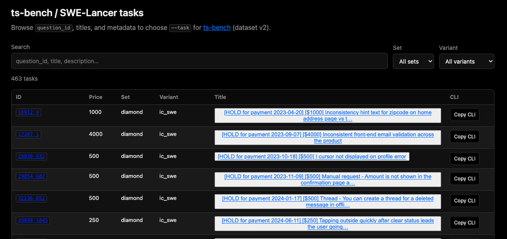
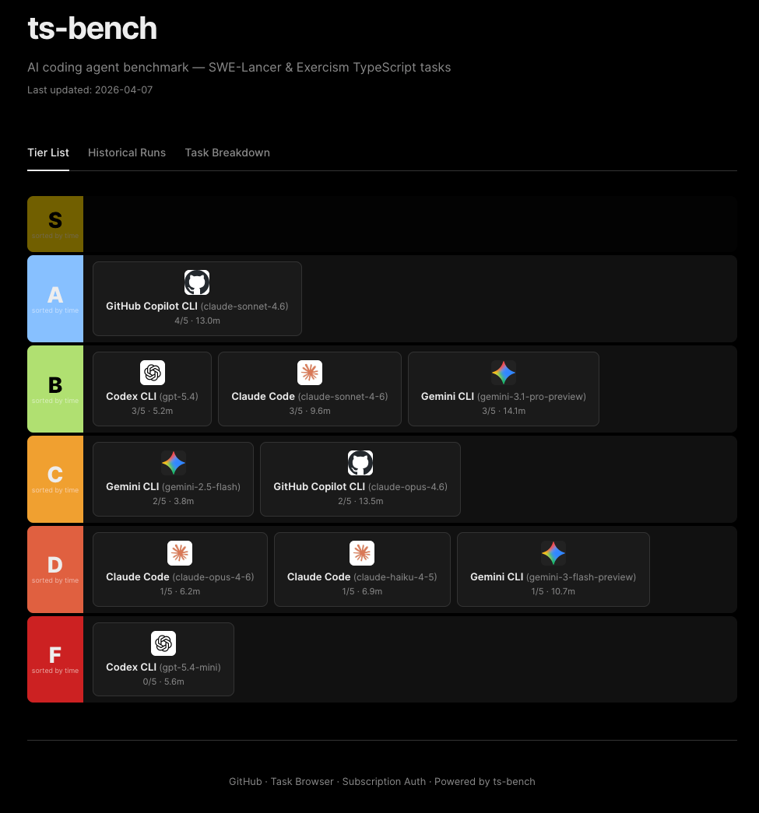
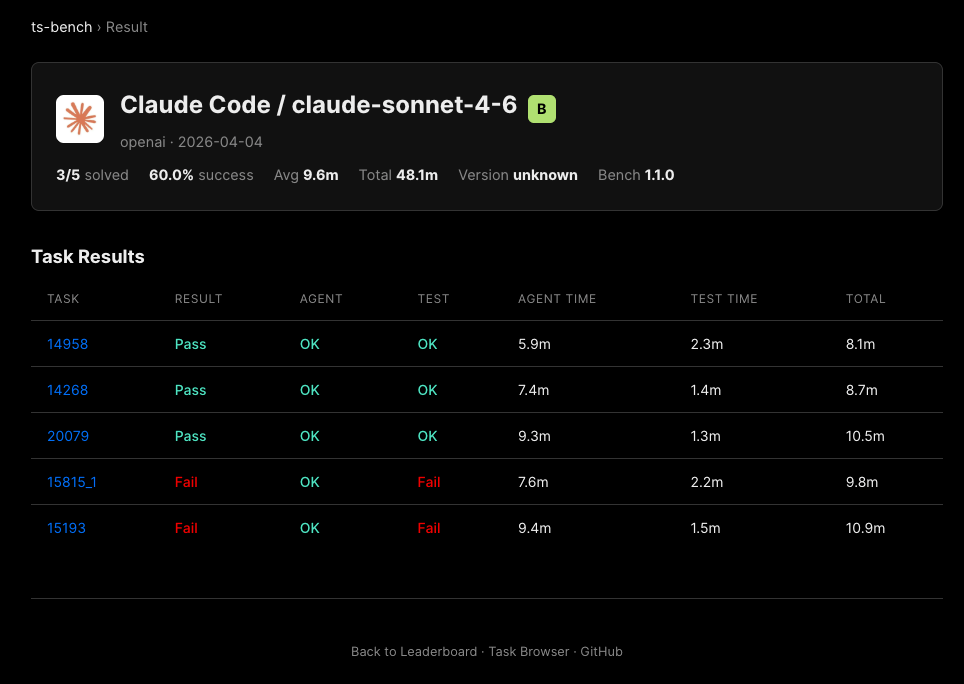

ts-bench is a benchmark CLI for comparing AI coding agents on TypeScript workloads.
Version 1 used small, self-contained Exercism TypeScript exercises. That was useful at first, but modern coding models and agents have largely outgrown that level of difficulty. Many top systems can now solve those tasks perfectly, which makes the benchmark less useful for comparison.
ts-bench v2 moves to a harder target: real-world SWE-Lancer tasks from Expensify, a large React Native / TypeScript monorepo.
The goal is not to produce a definitive universal leaderboard. The goal is more practical:
Measure the actual agent/model combinations people use in daily development — Claude Code, Codex CLI, Copilot CLI, Gemini CLI, opencode, and others — on realistic TypeScript tasks.
In this project, I use two different meanings of “harness.”
An agent harness is the runtime that sends prompts to an LLM, calls tools, edits files, and runs commands. Examples include Claude Code, Codex CLI, Copilot CLI, Nano Code, and opencode.
An evaluation harness is the system that defines tasks, prepares the environment, runs the agent, executes tests, and aggregates results.
ts-bench is an evaluation harness. It lets you swap different agent harnesses and compare them under the same task setup.
This distinction matters because model performance and agent-harness performance are not the same thing. The same model can behave differently depending on the tool loop, prompt, file context, authentication method, and execution environment around it.
The original v1 benchmark was based on Exercism TypeScript exercises. These are small programming tasks with clear tests. They are easy to run and useful for early comparisons, but they eventually became too easy.
This is not unique to ts-bench. Other benchmarks based on small programming exercises have also faced saturation. Once many systems reach perfect or near-perfect scores, the benchmark can no longer separate practical differences between agents.
For v2, ts-bench uses SWE-Lancer tasks instead.
SWE-Lancer is based on real software-engineering tasks from Expensify. The public offline IC SWE Diamond set contains 198 tasks. These tasks are closer to the kind of work coding agents are actually used for: fixing UI behavior, validation logic, chat interactions, markdown rendering, focus handling, and other application-level issues in a large codebase.
For the first v2 snapshot, I used a 5-task default set with a total listed reward of $20,000.
| Task ID | Reward | Difficulty |
|---|---|---|
14958 | $8,000 | Hard |
15815_1 | $4,000 | Medium |
15193 | $4,000 | Medium |
14268 | $2,000 | Easy-Med |
20079 | $2,000 | Easy-Med |
These rewards are not used as the benchmark score. They are used as a rough signal that these are non-trivial real-world tasks.

ts-bench v2 runs SWE-Lancer tasks inside Docker.
At a high level, each run does the following:
bug_reintroduce.patch to create the broken starting state.A typical command looks like this:
bun src/index.ts \
--dataset v2 \
--docker \
--tasks 14958,15815_1,15193,14268,20079 \
--agent codex \
--model gpt-5.4The important design goal is reproducibility. I want users to be able to run the benchmark with their own accounts, subscriptions, API keys, models, and agent configurations — not just read a static leaderboard produced by someone else.
The current v2 results are only an early snapshot. Models, agents, prompts, and the evaluation code will continue to change.
Still, the first run already shows why measuring real agent/model combinations is useful.

| Agent / Model | Tier | Solved | Time |
|---|---|---|---|
| copilot / claude-sonnet-4.6 | A | 4/5 | 64.8 min |
| claude / claude-sonnet-4-6 | B | 3/5 | 48.1 min |
| codex / gpt-5.4 | B | 3/5 | 26.2 min |
| gemini / gemini-3.1-pro-preview | B | 3/5 | 70.6 min |
| copilot / claude-opus-4.6 | C | 2/5 | 67.6 min |
| gemini / gemini-2.5-flash | C | 2/5 | 18.8 min |
| claude / claude-haiku-4-5 | D | 1/5 | 34.4 min |
| claude / claude-opus-4-6 | D | 1/5 | 31.2 min |
| gemini / gemini-3-flash-preview | D | 1/5 | 53.4 min |
| codex / gpt-5.4-mini | F | 0/5 | 28.1 min |
A few observations stand out:
These are not final conclusions. They are reasons to keep measuring.

A small number of tasks is too noisy for a precise ranking. One task can move a model up or down.
For practical use, tiers are more useful than exact rank order. I mostly want to know whether an agent/model combination is:
The long-term goal is to increase the sample size and report more stable tier distributions.
v2 is much more expensive to run than v1.
The benchmark now involves:
Even the small 5-task default set takes tens of minutes per agent/model combination. Expanding the benchmark to more tasks, more agents, and more models makes the cost grow quickly.
Some of the next engineering tasks are also about reducing this cost:
ts-bench v2 is an ongoing project. I want to keep updating the leaderboard, add more agents and models, and increase the number of tasks so the results become more useful.
If you find this work useful, please consider sponsoring it.
👉 Sponsor the project: https://github.com/sponsors/laiso
Related links: